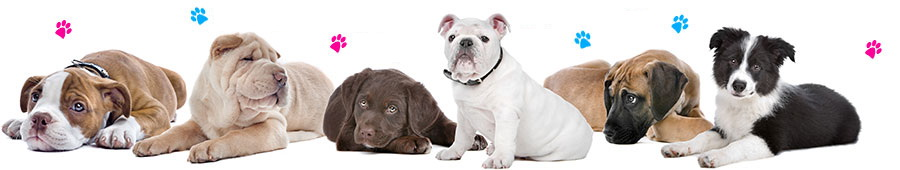
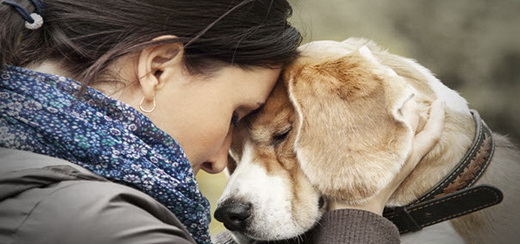
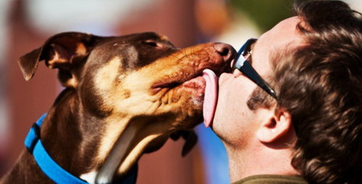

Devet načina na koje vam psi ulepšavaju život!
1. Psi drastično podižu vaše raspoloženje!
Dovoljno je provesti 15 minuta do pola sata sa psom da biste se osećali opuštenije, da bi se nivo stresa smanjio i povećao osećaj radosti. Igranje sa štenetom, dokazano, povećava nivo dopamina i serotonina, koji su neurotransmiteri direktno povezani sa osećajem zadovoljstva i smirenosti. Dakle, sledeći put kad ste neraspoloženi, uzmite prvu gumenu lopticu i posvetite se svom psu. Taj repić ima nepogrešiv način da vam popravi dan.
2. Pas u kući smanjuje šanse od kardiovaskularnih oboljenja!
Istraživanja su pokazala da su komunikacija i igra sa kućnim ljubimcem često praćena smanjenjem krvnog pritiska, što automatski podrazumeva smanjenje rizika od srčanih i drugih oboljenja, na duže staze.
3.Pas unapređuje psihološko blagostanje i podstiče zdrav život!
Pas je, pre svega, dnevni trening bilo da šetate psa ili da povremeno trčite i igrate se s njim. Samim tim, vlasnici psa vode aktivan život – bilo da im je to u prirodi ili ne.
4. Prijatelj!
Takođe kod dece, stalno druženje sa psom podiže nivo samopouzdanja koje je preko potrebno svakom detetu, naročito u kritičnim godinama osnovne škole.
5. Lojalnost!
Zbog visoko izraženog čila mirisa, vida i sluha, psi su vrlo perceptivni, a pritom su i lojalni svojim gospodarima. Odlično tumače govor tela čoveka, emocije i osećanja, i nikad nisu indiferentni na stanje čoveka koji im je blizak.
 6. Genetski su predodređeni da brinu i čuvaju!
Još kao štenci, psi stiču osećaj da paze i budu svesni svega što možda nije po volji njihovom gospodaru. Potencijalne smetnje raskrinkavaju lavežom, ili skakanjem na prozor. Rotvajleri, nemački ovčari, i škotski terijeri su u samom vrhu rasa najboljih pasa čuvara, ali čak i takozvani manji psi imaju primaran poriv da „brinu o kući“ i obaveštavaju porodicu o svemu što se događa, a da njima deluje čudno.
7. Psi podstiču društvenost!
Psima nije samo potrebno vreme tokom kojeg će se družiti sa ljudima, već i sa drugim psima. To znači da njihova vlasnici moraju da se viđaju i vremenom upoznaju sa vlasnicima drugih pasa makar u kraju u kom žive i šetaju psa.
8. Ne postoji dosadan trenutak!
Sa psom u kući ne postoji opcija sedenja u kući i dosađivanja. Toliko je toga što možete da radite sa svojim ljubimcem, bilo da ćete da bacate lopticu, idete u šetnju, trčite ili prosto posmatrate njega kako uvek i nepogrešivo zna kako da iskoristi svoje vreme. Psima je sve uvek interesantno, i sve je zabavno.
9.Ublažavaju stres na posl!
Trend „pet friendly“ firmi raste u svetu. Poslodavci masovno dozvoljavaju dovođenje pasa na posao i postoji razlog za to. Istraživanja su pokazala da su osobe koje sa sobom povedu psa na posao manje izložene stresu tokom radnog dana.